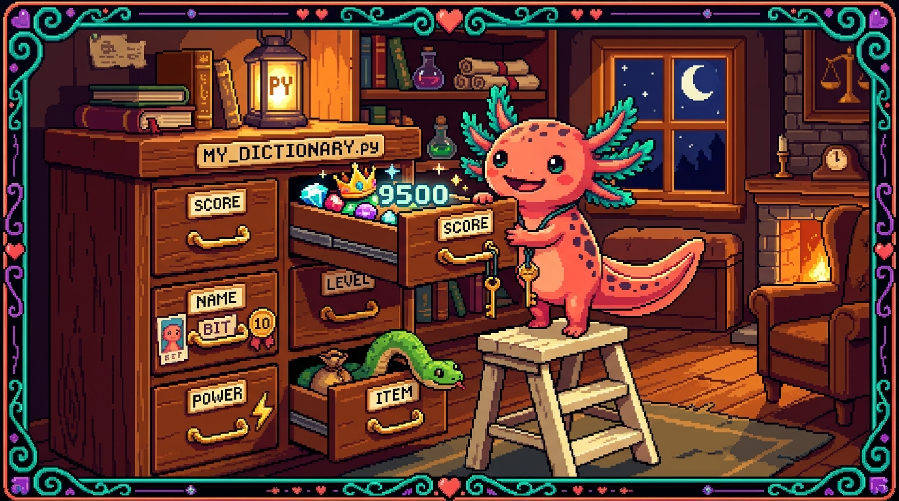

Capitulo 08 — Diccionarios a fondo

Hola, soy Bit, tu ajolote guia. En el capitulo anterior aprendiste a guardar muchas cosas en orden con las listas. Hoy damos un paso que cambia bastante la forma de trabajar: vamos a guardar cosas con nombre. En lugar de decir "el elemento numero 3 de la lista", diras "el campo
nombre" o "el campopuntos". A eso lo llamamos diccionario, y es la estructura con la que esta armado casi todo PolyPaw por dentro: el perfil del usuario, las misiones, la configuracion... todo. Respira hondo, mueve las branquias y empezamos.
1. ¿Que problema resuelve un diccionario?
Supon que quieres guardar los datos de un usuario de PolyPaw: su nombre, su idioma, sus puntos y su nivel. Con lo que sabes hasta ahora, lo natural seria usar una lista:
usuario = ["Edwar", "ingles", 1500, 3]
Y enseguida aparece el problema: ¿que es el 1500? ¿Y el 3? Tienes que acordarte de memoria de que la posicion 2 son los puntos y la 3 el nivel. Si manana agregas un dato en medio, todas las posiciones se corren y tu codigo se rompe. Es fragil y se presta a confusion.
Un diccionario lo arregla poniendole una etiqueta a cada dato:
usuario = {
"nombre": "Edwar",
"idioma": "ingles",
"puntos": 1500,
"nivel": 3,
}
Ahora se entiende a la primera. usuario["puntos"] es 1500, sin andar contando posiciones. Esto es justo lo que hace PolyPaw para representar al estudiante.
🟦 ¿Que significa? — Diccionario
Un diccionario es una coleccion que guarda parejas de clave y valor. La clave es la etiqueta (como
"nombre") y el valor es el dato que esa etiqueta guarda (como"Edwar"). Sirve para almacenar informacion donde cada dato tiene un significado claro y lo buscas por su nombre, no por su posicion. En PolyPaw, el perfil del usuario y cada mision son diccionarios; cuandodatabase_manager.pylee un archivo JSON, lo convierte en un diccionario de Python.🟦 ¿Que significa? — Clave y valor
La clave (en ingles key) es el nombre que identifica un dato dentro del diccionario; el valor (value) es el dato en si. En
"puntos": 1500, la clave es"puntos"y el valor es1500. Las claves suelen ser texto (cadenas) y tienen que ser unicas: no puede haber dos claves"puntos"en el mismo diccionario. Asi cada pieza de informacion tiene su propia direccion con nombre.💡 Tip
Fijate en las llaves
{ }. Las listas usan corchetes[ ], las tuplas usan parentesis( ), y los diccionarios usan llaves{ }con parejasclave: valor. Esa pareja separada por dos puntos es la marca de la casa del diccionario.
Si vienes del modulo de JavaScript, esto te va a resultar familiar: un diccionario de Python es practicamente lo mismo que un objeto de JavaScript ({ nombre: "Edwar" }). La diferencia que mas salta a la vista es que en Python las claves van casi siempre entre comillas ("nombre").
2. Crear y leer un diccionario
Crear uno es escribir las parejas entre llaves. Tambien puedes arrancar con uno vacio y llenarlo despues:
# Diccionario con datos desde el inicio
mision = {
"id": "saludos_01",
"titulo": "Saludos basicos",
"idioma": "ingles",
"puntos": 50,
}
# Diccionario vacio que llenamos despues
progreso = {}
progreso["misiones_completadas"] = 0
progreso["racha"] = 1
Para leer un valor, escribes el diccionario seguido de la clave entre corchetes:
print(mision["titulo"]) # Saludos basicos
print(mision["puntos"]) # 50
Para cambiar un valor o agregar uno nuevo, usas la misma sintaxis pero con un =:
mision["puntos"] = 75 # cambia un valor existente
mision["dificultad"] = "facil" # agrega una clave nueva
⚠️ Cuidado
Si pides una clave que no existe con corchetes, Python lanza un error y el programa se detiene:
python print(mision["autor"]) # KeyError: 'autor'EseKeyErrorquiere decir "no encontre esa clave". En la siguiente seccion veras la forma segura de evitarlo.🟦 ¿Que significa? — KeyError
Un KeyError es el error que Python muestra cuando intentas leer una clave que no esta en el diccionario. "Key" es clave en ingles y "Error" es error. Funciona como aviso de que pediste algo que no existe. En una app real como PolyPaw, un
KeyErrorque nadie atiende puede tumbar la pantalla del usuario, por eso conviene leer las claves con cuidado.
3. Acceso seguro con .get()
Hay veces en que no estas seguro de si una clave existe. Por ejemplo, un usuario nuevo de PolyPaw quizas todavia no tiene el campo "racha". Para esos casos usas .get() en lugar de los corchetes.
usuario = {"nombre": "Edwar", "puntos": 1500}
# Con corchetes, esto reventaria:
# print(usuario["racha"]) # KeyError
# Con .get() devuelve None si no existe, sin error:
print(usuario.get("racha")) # None
Lo mejor es que puedes darle un valor por defecto: si la clave no existe, .get() te devuelve lo que tu indiques en vez de None.
racha = usuario.get("racha", 0)
print(racha) # 0 -> usuario nuevo, asumimos racha cero
🟦 ¿Que significa? — Metodo
.get()El metodo
.get()es una herramienta del diccionario que busca una clave y devuelve su valor; si la clave no existe, devuelveNone(o el valor por defecto que le pases como segundo argumento) en lugar de provocar un error. Sirve para leer datos que podrian no estar sin arriesgarte a unKeyError. PolyPaw lo usa para leer campos opcionales del perfil, como configuraciones que un usuario nuevo aun no ha tocado.🟦 ¿Que significa? — Valor por defecto
Un valor por defecto es el valor que se usa cuando no hay otro disponible. En
usuario.get("racha", 0), ese0es el valor por defecto: "si no hay racha guardada, considerala 0". Asi tu programa siempre tiene algo razonable con que trabajar y no se queda con unNoneque despues te da problemas.💡 Tip
Regla practica: usa corchetes
[ ]cuando estes seguro de que la clave existe (porque tu mismo la creaste), y usa.get()cuando el dato venga de afuera (un archivo JSON, lo que escribio el usuario, una respuesta de internet) y no tengas garantia de que este ahi.
En JavaScript, leer una propiedad ausente te da undefined sin reventar; en Python los corchetes si revientan, y por eso .get() es tan importante.
4. Recorrer un diccionario: .items(), .keys(), .values()
Muchas veces quieres pasar por todo el diccionario, dato por dato. Hay tres formas de hacerlo, segun lo que necesites.
Partimos de este perfil:
usuario = {
"nombre": "Edwar",
"idioma": "ingles",
"puntos": 1500,
"nivel": 3,
}
Recorrer las claves con .keys()
for clave in usuario.keys():
print(clave)
# nombre
# idioma
# puntos
# nivel
De hecho, si recorres un diccionario directamente, Python te da las claves sin necesidad de .keys():
for clave in usuario:
print(clave) # mismo resultado
Recorrer los valores con .values()
for valor in usuario.values():
print(valor)
# Edwar
# ingles
# 1500
# 3
Recorrer claves y valores juntos con .items()
Esta es la que mas vas a usar. Te da las dos cosas a la vez:
for clave, valor in usuario.items():
print(f"{clave}: {valor}")
# nombre: Edwar
# idioma: ingles
# puntos: 1500
# nivel: 3
🟦 ¿Que significa? — Metodo
.items()El metodo
.items()devuelve todas las parejas clave-valor del diccionario para poder recorrerlas en un bucle. En cada vuelta delforrecibes dos cosas: la clave y el valor. Sirve cuando necesitas tanto el nombre del dato como el dato mismo, por ejemplo para mostrar en pantalla "Puntos: 1500". PolyPaw lo usa para pintar la pantalla de perfil recorriendo cada campo del usuario.🟦 ¿Que significa? — Metodos
.keys()y.values()El metodo
.keys()devuelve solo las claves (los nombres) y el metodo.values()devuelve solo los valores (los datos). Sirven cuando te interesa una sola de las dos partes; por ejemplo,.values()para sumar todos los puntos de un conjunto, o.keys()para revisar que campos tiene un perfil.🟦 ¿Que significa? — Desempaquetado
El desempaquetado es cuando Python toma un grupo de valores que vienen juntos (como la pareja clave-valor que entrega
.items()) y los reparte en varias variables de una sola vez. Enfor clave, valor in usuario.items(), cada vuelta trae una pareja y Python la "desempaqueta": pone la clave enclavey el valor envalor. Asi tu codigo queda mas limpio, sin tener que sacar cada pieza a mano.💡 Tip
El truco
for clave, valor in ...items()se apoya en ese desempaquetado: Python toma la pareja y la reparte en dos variables de un solo golpe. Puedes ponerles los nombres que quieras (for k, v in ...), peroclave, valorse lee mucho mejor.
5. Diccionarios anidados: el corazon del JSON de PolyPaw
Aqui viene lo importante. Un valor de un diccionario puede ser cualquier cosa: un numero, un texto, una lista... o otro diccionario. Cuando metes diccionarios dentro de diccionarios, decimos que estan anidados. Asi es exactamente como lucen los archivos missions/*.json de PolyPaw.
mision = {
"id": "saludos_01",
"titulo": "Saludos basicos",
"puntos": 50,
"autor": {
"nombre": "Edwar",
"pais": "Colombia",
},
"ejercicios": [
{"pregunta": "Hello", "respuesta": "Hola"},
{"pregunta": "Goodbye", "respuesta": "Adios"},
],
}
Mira la estructura: la clave "autor" guarda otro diccionario, y la clave "ejercicios" guarda una lista de diccionarios. Asi se ven los datos del mundo real la mayor parte del tiempo.
🟦 ¿Que significa? — Diccionario anidado
Un diccionario anidado es un diccionario que tiene, dentro de alguno de sus valores, otro diccionario (o una lista de diccionarios). "Anidar" es meter una cosa dentro de otra, como cajas dentro de cajas. Sirve para representar informacion que tiene estructura por niveles: una mision que a su vez contiene varios ejercicios, cada uno con su propia pregunta y respuesta. Casi todos los archivos JSON de PolyPaw son diccionarios anidados.
🟦 ¿Que significa? — JSON
JSON (se lee "yeison") es un formato de texto para guardar datos organizados, muy parecido a como se escribe un diccionario de Python con sus llaves, claves y valores. Sirve para guardar informacion en archivos o enviarla entre programas. PolyPaw guarda cada paquete de misiones en archivos
missions/*.json, ydatabase_manager.pylos lee y los convierte en diccionarios de Python para quemain.pylos pueda usar.
Para llegar a un dato hondo, encadenas los corchetes, un nivel a la vez:
print(mision["autor"]["nombre"]) # Edwar
print(mision["ejercicios"][0]["pregunta"]) # Hello
print(mision["ejercicios"][1]["respuesta"]) # Adios
Leelo de izquierda a derecha, como si fuera una direccion: "de la mision, entra en autor, y de ahi saca el nombre". El [0] del segundo ejemplo aparece porque "ejercicios" es una lista, asi que primero eliges el ejercicio por su posicion y luego entras a su clave.
⚠️ Cuidado
Cada
[ ]que encadenas puede fallar si esa pieza no existe.mision["autor"]["telefono"]reventaria porque el autor no tiene"telefono". Para datos anidados que no son de fiar, encadena.get()con cuidado:python pais = mision.get("autor", {}).get("pais", "desconocido")Ese{}(diccionario vacio) de en medio es un truco: si"autor"no existe, devuelve un diccionario vacio para que el siguiente.get()tenga sobre que trabajar y no reviente.🔎 En tu codigo
En PolyPaw, cuando el codigo necesita mostrar la primera pregunta de una mision, hace algo muy parecido a
mision["ejercicios"][0]["pregunta"]. Si abres un archivo demissions/veras esa estructura de mision con su lista de ejercicios anidados. Entender este encadenamiento es entender como fluyen los datos por toda la app.
6. Modificar diccionarios: agregar, cambiar y borrar
Ya viste como agregar y cambiar con =. Para borrar una clave tienes del y el metodo .pop():
usuario = {"nombre": "Edwar", "puntos": 1500, "nivel": 3}
del usuario["nivel"] # elimina la clave "nivel"
puntos = usuario.pop("puntos") # elimina y ADEMAS te devuelve el valor
print(puntos) # 1500
print(usuario) # {'nombre': 'Edwar'}
Para comprobar si una clave existe antes de tocarla, usa in:
if "racha" in usuario:
print("El usuario tiene racha")
else:
print("Usuario nuevo, sin racha aun")
Y para sumar a un valor existente (algo muy comun: sumar puntos cuando se completa una mision):
usuario = {"nombre": "Edwar", "puntos": 1500}
usuario["puntos"] = usuario["puntos"] + 50 # ahora 1550
# o mas corto:
usuario["puntos"] += 50 # ahora 1600
🟦 ¿Que significa? — Operador
inen diccionariosEl operador
incomprueba si una clave existe dentro de un diccionario y devuelveTrueoFalse. ("in" es "en" en ingles.) Ojo: revisa las claves, no los valores. Sirve para preguntar "¿tiene este usuario el campo racha?" antes de usarlo, y asi evitar unKeyError. PolyPaw lo usa para saber si un perfil ya tiene cierta configuracion guardada.🟦 ¿Que significa? — Instruccion
delLa instruccion
del(abreviatura de "delete", borrar en ingles) elimina una clave del diccionario y su valor, sin devolverte nada. Se escribedel usuario["nivel"]. Sirve cuando solo quieres deshacerte de un dato y no necesitas usarlo despues. Si lo que buscas es borrarlo y al mismo tiempo quedarte con su valor, entonces usas.pop()en lugar dedel.🟦 ¿Que significa? — Metodo
.pop()El metodo
.pop()elimina una clave del diccionario y, a la vez, te entrega el valor que tenia. "Pop" es "sacar" en ingles. Sirve cuando quieres quitar un dato pero todavia necesitas usarlo una ultima vez, por ejemplo sacar una mision de la lista de pendientes y guardarla en las completadas.
7. Comprensiones de diccionario
En el capitulo de listas viste las comprensiones de lista, esa forma compacta de construir una lista en una sola linea. Los diccionarios tienen su version equivalente: las comprensiones de diccionario.
Imagina que tienes una lista de idiomas y quieres un diccionario que diga cuantas letras tiene cada uno:
idiomas = ["ingles", "frances", "aleman"]
longitudes = {idioma: len(idioma) for idioma in idiomas}
print(longitudes)
# {'ingles': 6, 'frances': 7, 'aleman': 6}
La forma general es {clave: valor for elemento in coleccion}. Comparalo con la version larga, que hace exactamente lo mismo:
longitudes = {}
for idioma in idiomas:
longitudes[idioma] = len(idioma)
🟦 ¿Que significa? — Comprension de diccionario
Una comprension de diccionario es una forma corta de crear un diccionario nuevo a partir de otra coleccion, escribiendo en una sola linea la clave y el valor que tendra cada pareja. "Comprension" aqui no significa "entender", es el nombre tecnico de esta tecnica. Sirve para transformar datos rapidamente: por ejemplo, a partir de una lista de misiones, armar un diccionario que las indexe por su
idpara encontrarlas al instante.
Un caso muy de PolyPaw: tienes una lista de misiones y quieres poder buscarlas por su id sin recorrer toda la lista cada vez. Una comprension lo arma de un tiron:
misiones = [
{"id": "saludos_01", "titulo": "Saludos basicos"},
{"id": "comida_01", "titulo": "En el restaurante"},
]
por_id = {m["id"]: m for m in misiones}
print(por_id["comida_01"]["titulo"]) # En el restaurante
Tambien puedes filtrar con un if al final, igual que en las comprensiones de lista:
usuario = {"nombre": "Edwar", "puntos": 1500, "nivel": 3, "racha": 0}
# Solo los campos numericos mayores que cero
positivos = {k: v for k, v in usuario.items() if isinstance(v, int) and v > 0}
print(positivos) # {'puntos': 1500, 'nivel': 3}
🟦 ¿Que significa? — Funcion
isinstance()La funcion
isinstance()comprueba si un valor es de cierto tipo y devuelveTrueoFalse. Enisinstance(v, int)pregunta "¿este valorves un numero entero?". El nombre viene de "is instance" ("es una instancia de" en ingles). Sirve para filtrar datos por su tipo, por ejemplo quedarte solo con los campos numericos de un perfil e ignorar los de texto.💡 Tip
No te obsesiones con meter todo en una sola linea. Si la comprension se vuelve dificil de leer, un
fornormal de varias lineas es perfectamente valido y muchas veces mas claro. Lo legible le gana a lo corto.
8. ¿Diccionario o lista? Cuando usar cada uno
Esta es una decision que vas a tomar todo el tiempo. La regla mas simple es esta:
- Usa una lista cuando tienes muchas cosas del mismo tipo en orden y las recorres o las cuentas. Ejemplo: la lista de todas las misiones de un idioma, los ejercicios de una mision.
- Usa un diccionario cuando tienes un conjunto de datos con nombre que describen una sola cosa, y los buscas por etiqueta. Ejemplo: el perfil de un usuario, una mision individual con su titulo, puntos y autor.
Muy a menudo se combinan: una lista de diccionarios. Ese es justo el caso de PolyPaw: una lista de misiones, donde cada mision es un diccionario.
| Pregunta | Si... | Usa |
|---|---|---|
| ¿Importa el orden y son del mismo tipo? | si | lista |
| ¿Cada dato tiene un nombre distinto? | si | diccionario |
| ¿Necesitas buscar por etiqueta rapido? | si | diccionario |
| ¿Es una coleccion para recorrer y contar? | si | lista |
# Lista de diccionarios: el patron mas comun de PolyPaw
misiones = [
{"id": "saludos_01", "titulo": "Saludos basicos", "puntos": 50},
{"id": "comida_01", "titulo": "En el restaurante", "puntos": 70},
]
# La lista nos deja recorrer y contar:
total = len(misiones) # 2 misiones
suma = sum(m["puntos"] for m in misiones) # 120 puntos en total
# Cada diccionario nos deja leer campos por nombre:
print(misiones[0]["titulo"]) # Saludos basicos
🔎 En tu codigo
Cuando
database_manager.pyde PolyPaw carga un archivomissions/*.json, normalmente obtiene una lista de diccionarios: la lista son todas las misiones del paquete, y cada diccionario es una mision con sus claves (id,titulo,puntos,ejercicios...). El resto de la app recorre esa lista con unfory lee cada mision por sus claves. Si entiendes este capitulo, entiendes el formato de datos central de toda la aplicacion.⚠️ Cuidado
No abuses de los diccionarios para cosas que son claramente una secuencia. Guardar tus ejercicios como
{"1": ..., "2": ..., "3": ...}con claves que son numeros disfrazados de texto es senal de que en realidad querias una lista. Si lo unico que distingue a tus datos es un orden, usa lista.
Si te acuerdas del modulo de JavaScript: alla tambien combinabas arrays (las listas de Python) con objetos (los diccionarios de Python) exactamente igual, un array de objetos. El concepto es identico; solo cambia un poco la sintaxis.
✅ Checklist — ¿ya domino esto?
- [ ] Se que un diccionario guarda parejas de clave y valor entre llaves
{ }. - [ ] Puedo crear un diccionario, leer un valor con
[ ]y agregar o cambiar valores con=. - [ ] Entiendo que pedir una clave inexistente con
[ ]lanza un KeyError. - [ ] Se usar
.get()y darle un valor por defecto para leer sin riesgo. - [ ] Puedo recorrer un diccionario con
.items(),.keys()y.values(). - [ ] Entiendo los diccionarios anidados y se encadenar
[ ]para llegar a datos profundos. - [ ] Relaciono el JSON de PolyPaw con un diccionario (o lista de diccionarios) de Python.
- [ ] Se borrar claves con
dely.pop(), y comprobar existencia conin. - [ ] Puedo escribir una comprension de diccionario sencilla.
- [ ] Se decidir entre lista y diccionario segun la forma de mis datos.
🧪 Ejercicios
-
(En papel) Escribe a mano un diccionario llamado
perfilcon tu nombre, tu idioma favorito y un numero de puntos inventado. Marca con un circulo cuales son las claves y cuales los valores. -
💻 Crea el diccionario
usuario = {"nombre": "Edwar", "puntos": 1500}. Imprime el nombre con corchetes. Luego intenta leerusuario["racha"]con.get()dando0como valor por defecto, e imprime el resultado. Comprueba que no se rompe el programa. -
💻 Con el diccionario del ejercicio anterior, recorrelo con
.items()e imprime cada pareja en el formatoclave -> valor. Despues suma 100 a los puntos usando+=y vuelve a imprimir el diccionario completo. -
💻 Crea una lista de diccionarios con al menos tres misiones, cada una con
id,tituloypuntos(imitando losmissions/*.jsonde PolyPaw). Usa unforpara imprimir el titulo de cada mision y, al final, imprime la suma total de puntos. -
💻 Usando la lista de misiones del ejercicio 4, escribe una comprension de diccionario que cree un nuevo diccionario
por_iddonde la clave sea elidde cada mision y el valor sea la mision completa. Luego busca una mision por suide imprime su titulo. -
💻 (Reto) Crea una mision anidada que tenga una clave
"autor"(un diccionario connombreypais) y una clave"ejercicios"(una lista de al menos dos diccionarios conpreguntayrespuesta). Imprime el pais del autor y la respuesta del segundo ejercicio encadenando corchetes. Bonus: usa.get()encadenado para leer un campo del autor que no exista sin que el programa reviente.
Lo lograste. Los diccionarios son, sin exagerar, la estructura mas importante que vas a usar en Python para datos del mundo real, y acabas de ver justo como PolyPaw los usa para el perfil, las misiones y todo el JSON. La proxima vez que abras un archivo de
missions/ya no veras un texto raro: veras claves, valores y anidamiento que entiendes. Nos vemos en el siguiente capitulo. — Bit 🐾